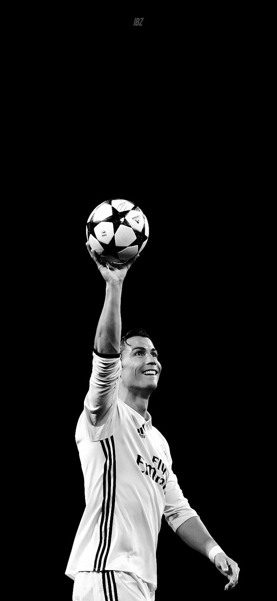

Cristiano Ronaldo dos Santos Aveiro GOIH ComM is a Portuguese professional footballer who plays as a forward for and captains both Saudi Pro League club Al Nassr and the Portugal national team
Cristiano Ronaldo dos Santos Aveiro was born on 5 February 1985 in the São Pedro parish of Funchal, the capital of the Portuguese island of Madeira, and grew up in the nearby parish of Santo António.[10][11] He is the fourth and youngest child of Maria Dolores dos Santos Viveiros da Aveiro, who worked as a cook in the hospitality industry and a cleaning woman,[12][13] and José Dinis Aveiro, a municipal gardener at the Junta de Freguesia of Santo António and part-time kit man for football club Andorinha.[14][15][16] His great-grandmother on his father's side, Isabel da Piedade, was from the island of São Vicente, Cape Verde.[17] He has one older brother, Hugo, and two older sisters, Elma and Liliana Cátia "Katia".[18] He was named after actor and U.S. President Ronald Reagan, whom his father was a fan of.[19] His mother revealed that she wanted to abort him due to poverty, his father's alcoholism, and having too many children already , but her doctor refused to perform the procedure,
"I don't mind people hating me, because it pushes me"
Made by Rushdy adel